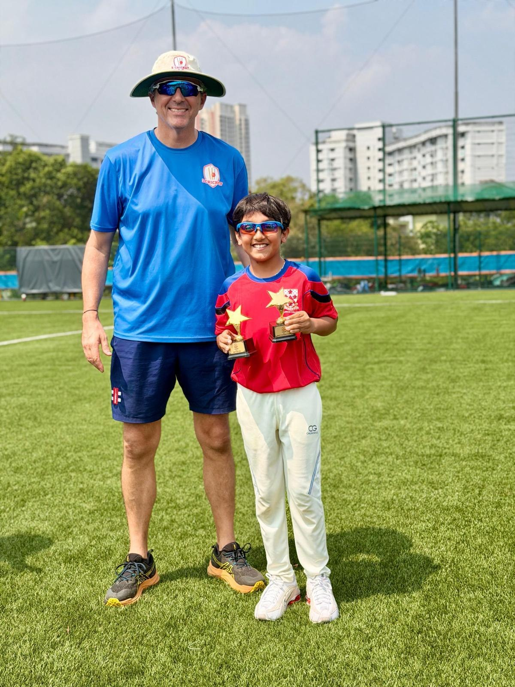
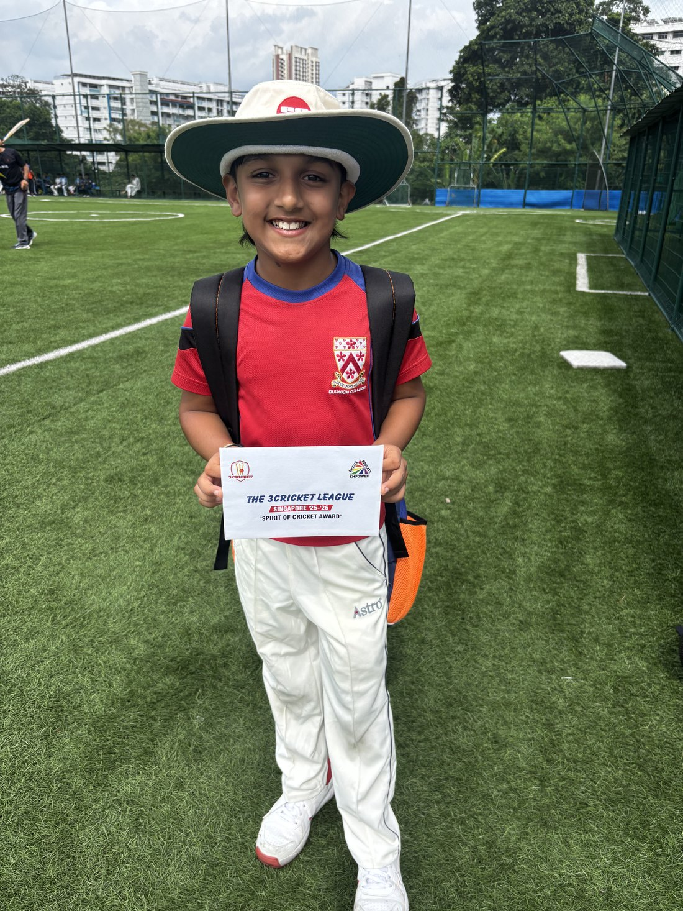
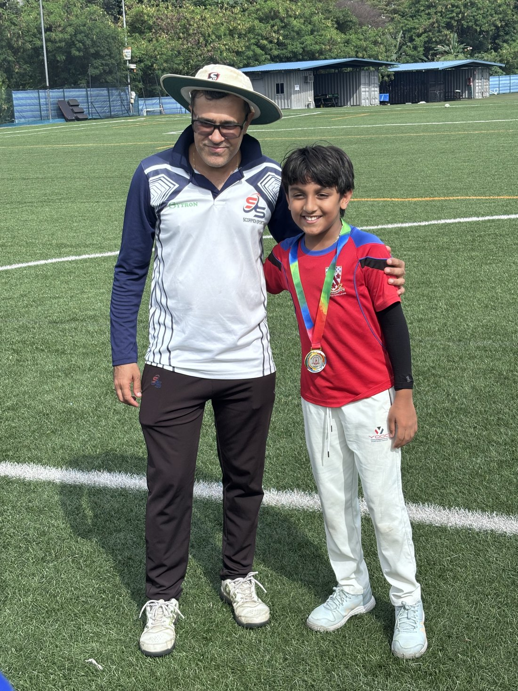
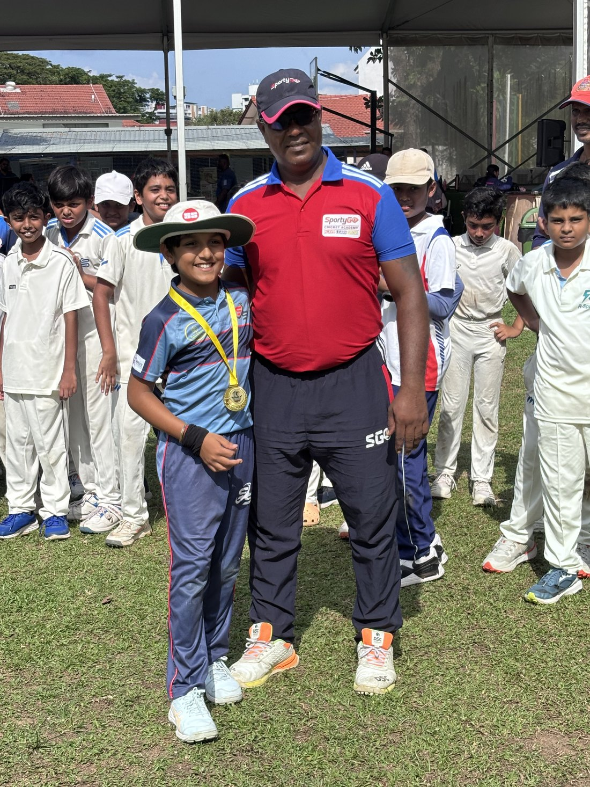
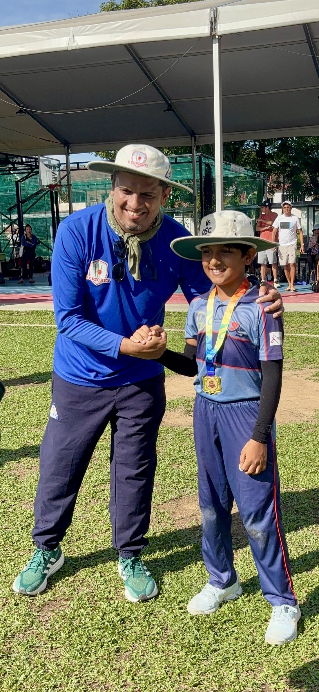
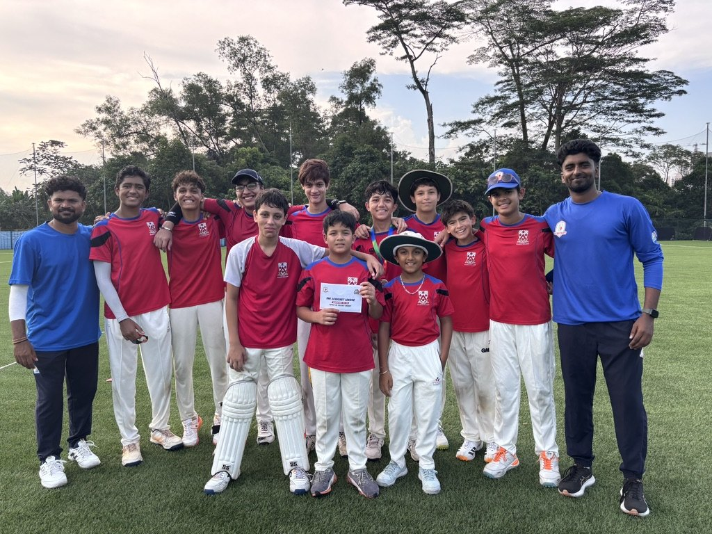
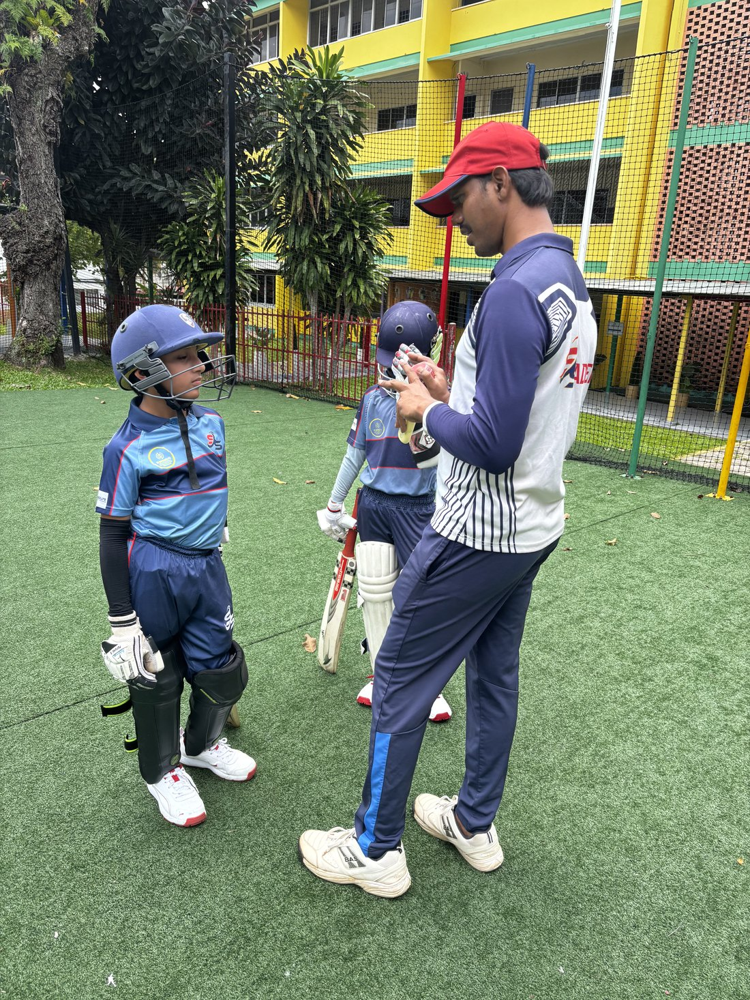
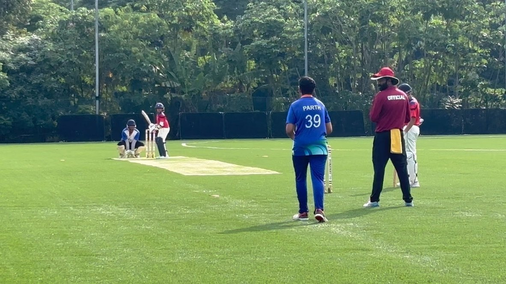

A scoring rate that compounds
Most junior batters improve by adding runs. Suhaann has added runs and pace, season after season, without giving up his average — the harder and rarer combination.
Across three seasons his strike rate has moved 115.91 → 133.62 → 152.82 — faster in every season. Over the same span his average rose 14.71 points, from 51.00 to 65.71, easing 1.29 from its 2025 peak. Batters who add thirty-seven runs per hundred balls usually pay far more than that.
The method is visible in the ball-by-ball record: 69.9% of his career runs have come in boundaries — 199 fours and 23 sixes from 998 balls. He scores through the field, from the top of the order.
Four hundreds and eight fifties in 33 innings means he converts. Two of those hundreds came in 2025 and two in 2026 — the big score is repeatable rather than exceptional.
Two hundreds, thirteen months apart
Both were reported by SportyGo Singapore, the league operator, with full ball-by-ball detail. The second was faster than the first.
What the league says
SportyGo Singapore is the operator of the SGO Junior Cricket League. These are their own match reports — independent third-party assessment, not family testimony.
A masterclass in controlled aggression.
Maturity well beyond his age.
One of the most dominant individual performances of the tournament.
Quotations are short extracts from SportyGo Singapore's public match reports, reproduced with attribution. Full posts are linked in Sources.
Three seasons, one direction
Strike rate and batting average by primary campaign, from the CricClubs match record.
Full batting record, 2024–2026
Every match on the SportyGo/CricClubs system across five squad registrations. Nothing estimated — each row is checkable at the sources below.
| Squad | Mat | Inns | NO | Runs | Avg | SR | HS | 100s | 50s | 4s | 6s | Wkts |
|---|---|---|---|---|---|---|---|---|---|---|---|---|
| CricKingdom / Bolts / CardinalsMay 2024 – Mar 2025 | 10 | 9 | 4 | 255 | 51.00 | 115.91 | 62 | 0 | 1 | 32 | 3 | 10 |
| Scorpien FalconsFeb – Nov 2025 | 11 | 10 | 3 | 469 | 67.00 | 133.62 | 119 | 2 | 3 | 74 | 10 | 2 |
| Scorpien EaglesMar – Aug 2025 | 3 | 1 | 0 | 38 | 38.00 | 146.15 | 38 | 0 | 0 | 4 | 2 | 1 |
| Scorpien SmashersMay – Jul 2026 | 4 | 4 | 1 | 115 | 38.33 | 115.00 | 90 | 0 | 1 | 14 | 0 | 3 |
| Scorpien StrikersMar – Nov 2026 | 9 | 9 | 2 | 460 | 65.71 | 152.82 | 103 | 2 | 3 | 75 | 8 | 3 |
| Career total | 37 | 33 | 10 | 1,337 | 58.13 | 133.97 | 119 | 4 | 8 | 199 | 23 | 19 |
Suhaann is registered under two spellings (“Suhaan” and “Suhaann”) across five squads. All five are the same player; totals are the sum of those records.
U11 3Cricket League 2025 — a clean sweep
Eight teams, thirty matches, Singapore. Playing for Dulwich College, Suhaann finished top of three of the four league leaderboards — and the margins were not close.
Most Valuable Player
34.98 rating points — batting 22.63, bowling 7.31, fielding 5.04.
Leading Run-Scorer
224 runs at 74.67 from six innings, three times not out, with 36 fours. Best of 54.
Leading Fielder
Five dismissals in seven matches — two catches and three run-outs.
3Cricket is a modified short format; strike rates across the whole league sit below standard T20 rates, so this competition reads on rank and margin rather than raw scoring pace.
The seasons in pictures











Match video
Five consecutive deliveries filmed square of the wicket in November 2026 — close enough to read stance, trigger movement and shot selection.
Player detail
Technical
- Batting
- Right-hand, opener
- Bowling
- Right-arm medium
- Role
- Top-order batter / all-rounder
- Wickets
- 19 in 37 matches
- School
- Dulwich College (Singapore)
Scoring signature
- Boundary runs
- 69.9% of career
- Fours / sixes
- 199 / 23
- Balls faced
- 998
- Scores of 25+
- 19 of 33 innings
- Quickest recorded ton
- 103 off 56
Sources
- CricHeroes — U11 3Cricket League 2025 leaderboards cricheroes.com
- SportyGo Singapore — match report, 19 July 2026 (103) facebook.com/SportyGoSingapore
- SportyGo Singapore — match report, 8 June 2025 (119) facebook.com · post
- CricClubs — Suhaann Patel, ID 6653372 (Scorpien Strikers) playerId=6653372
- CricClubs — Suhaan Patel, ID 4947226 (Scorpien Falcons) playerId=4947226
- CricClubs — Suhaan Patel, ID 4717832 (CricKingdom Cardinals) playerId=4717832
- CricClubs — Suhaan Patel, ID 6792642 (Scorpien Smashers) playerId=6792642
- CricClubs — Suhaan Patel, ID 5046522 (Scorpien Eagles) playerId=5046522
All five player records retrieved directly from CricClubs on 19 November 2026. Listing sources is deliberate: a coach who can verify one claim in a single click treats the rest of the document as credible.